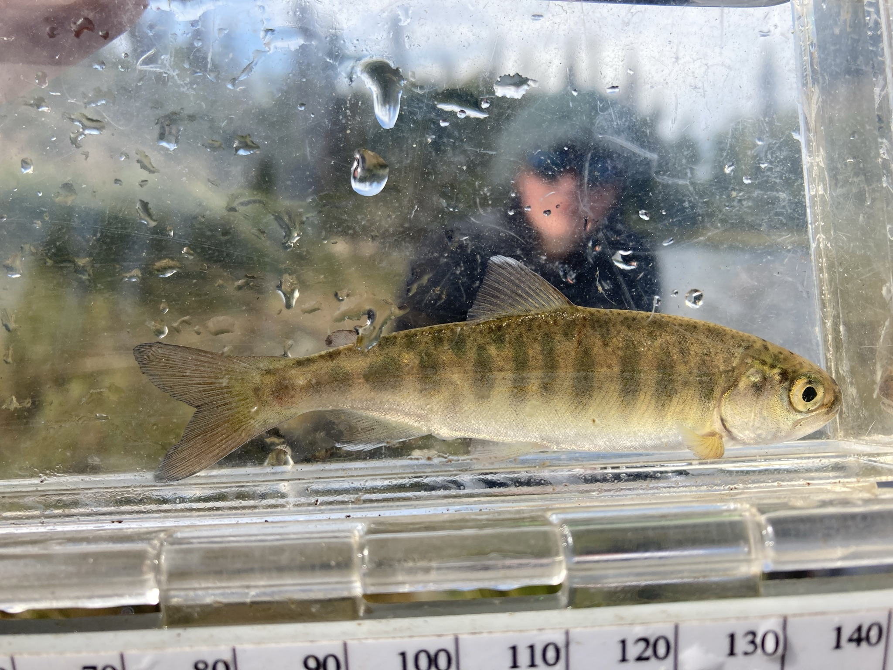
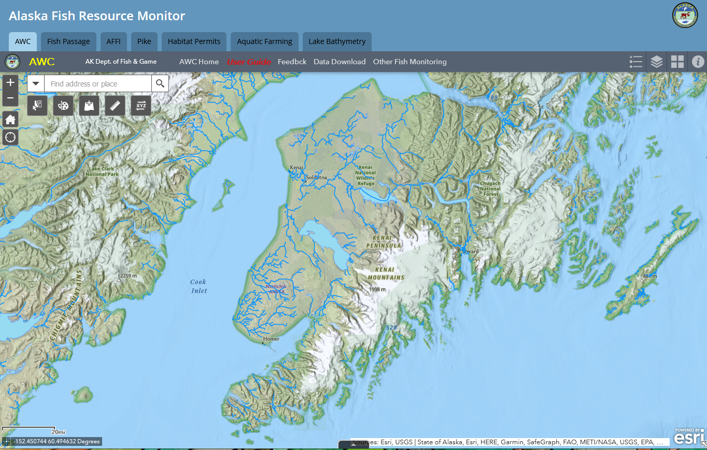

1 Introduction
1.1 Project Rationale
The Kenai Peninsula’s watersheds are significant producers of Pacific salmon. Critical to Alaska’s economic and cultural wellbeing, these salmon support fisheries both inland and throughout Cook Inlet. Kenai Watershed Forum (KWF) in collaboration with The Kenai Peninsula Chapter of Trout Unlimited (KPTU) are documenting habitat for salmonid spawning, rearing, and migration in order to increase the known water bodies recognized in the Alaska Department of Fish and Game’s (ADF&G’s) Anadromous Waters Catalog (AWC). The AWC is Alaska’s most powerful tool for regulating, protecting, and conserving anadromous fish habitat.
Salmon are intrinsic to the cultural and economic well being of Alaska, but cannot persist on the landscape without healthy habitat. Through strategic conservation efforts, riparian and instream habitat can continue to maintain salmon populations as well as transport marine-derived nutrients; maintain hydrology; and provide refuge during a rapidly changing climate.
In recognition of the importance of protecting anadromous fish habitat, the State of Alaska enacted Alaska Statute 16.05.8711, “Protection of Fish and Game”, which requires the state to list rivers, lakes, and streams important for the spawning, rearing, or migration of anadromous fish, while also requiring the prior approval of construction or use of said waterbody that may result in adverse effects on salmon populations. In response, ADF&G began overseeing the AWC whose data is now publicly hosted online for resource managers and interested members of the public to utilize. See Figure Figure 1.1 for ADFG’s online interactive map these data. Access the map at https://bit.ly/awc_map.

Each year, ADF&G solicits anadromous stream nominations from statewide efforts from the previous year. Once accepted, these nominations are incorporated into the AWC and its associated atlas. To date, the AWC includes nearly 20,000 anadromous streams, rivers, and lakes2, though it is widely understood that this number represents less than fifty percent of anadromous waterbodies throughout the state3. While ADF&G is conducting efforts to update existing data and survey for previously undocumented habitat, there remains a vast number of water bodies in need of surveying and habitat use observations.
In response, this project proposed to collect new observations of fish habitat and submit them for inclusion in the AWC.
KWF worked with KPTU to strategically prioritize survey sites to collect data for AWC nomination submissions. Site prioritization was based on criteria including the increase in protected anadromous fish habitat, accessibility, and alignment of priorities with local agency and partnership goals. These are described in greater detail in the methods section. KWF coordinated with local agency partners to ensure that fieldwork efforts were not unnecessarily replicated.
1.2 Volunteer Training
On June 5, 2021 a half-day training workshop was conducted by Kenai Watershed Forum staff for fifteen Trout Unlimited volunteers, including but not limited to identifying ideal anadromous fish habitat; responsible deployment and retrieval of minnow traps; juvenile and adult fish identification; data collection and recording while in the field; and safe travel in bear country. Participants were introduced to an Anadromous Habitat Survey Standard Operating Procedure (SOP) document4.

1.3 Objectives
Submit nominations to increase anadromous stream, river, lake, and wetland coverage in the AWC and corresponding atlas
Revise or corroborate outdated AWC and atlas data, particularly on Kenai River tributaries experiencing increases in zinc concentrations as well as priority corridors identified by the Kenai Mountains to Sea partnership